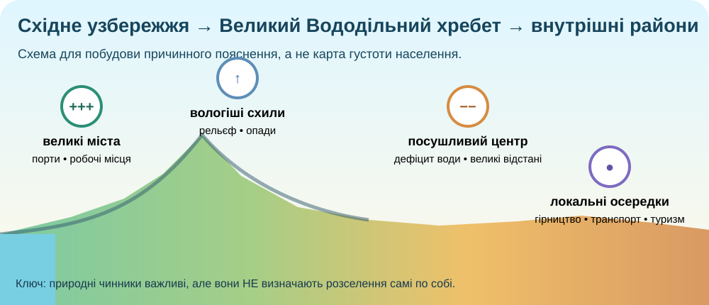
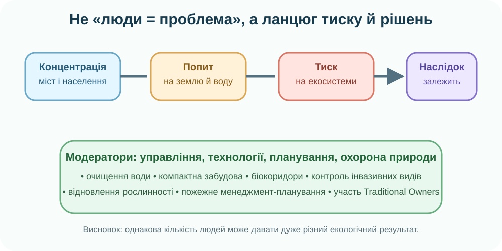

1. Просторовий детектив: материк великий, населення — ніби «притиснуте» до країв
OpenStreetMap. Порівняйте густоту назв населених пунктів, транспортних шляхів і забудови на узбережжях та у внутрішніх районах.
Завдання до цифр
Виберіть найкращу первинну гіпотезу.
2. Реальні дані: наскільки нерівномірно заселена Австралія?
особи/км² — середня густота, 2021
населення жило в міських районах, 2021
населення — у Greater Capital Cities
мешканців — у східних штатах і ACT
Джерела: Australian Bureau of Statistics — Regional population 2021, Historical population 2021, Snapshot of Australia 2021.
Міста як «вузли»
ABS Census 2021, Greater Capital Cities. Масштаб стовпчиків навчальний.
Тест на логіку
Напишіть, чому середнє значення приховує реальний малюнок розселення.

3. «Які народи?» — спершу виправляємо саме питання
First Peoples — не одна однорідна група
AIATSIS наголошує: Aboriginal and Torres Strait Islander Australia складається з багатьох різних народів і спільнот зі своїми культурами, мовами, законами та зв’язками з Country.
Існує понад 250 Indigenous languages та близько 800 діалектів, хоча життєздатність мов дуже різна.
AIATSIS: Map of Indigenous Australia ↗ Карта показує загальні мовні / соціальні групи; її межі не є точними чи юридичними.

Міні-відео за КТП
Замість узагальнення «як аборигени будували житло» використайте короткий фрагмент про технології та житло First Peoples.
Відкрити відеосерію → Chapter 11: Housing
Primezone / ABC Education. Після перегляду зафіксуйте: матеріал → властивість → умова середовища → перевага конструкції.

4. Сучасна Австралія — багатокультурне суспільство
Aboriginal peoples і Torres Strait Islander peoples — First Peoples Австралії з безперервним зв’язком із Country, мовами й культурними традиціями.
Колонізація Британією, а згодом міграція з Європи, Азії, Океанії, Африки та інших регіонів сформували сучасний склад населення.
Великі міста — не лише демографічні, а й культурні вузли: міжнародна міграція концентрується там, де є робота, освіта, транспорт і мережі спільнот.
5. Екологічні проблеми: не «багато людей = погано»

Навчальна причинна модель. Вона спеціально відділяє чисельність населення від способу використання ресурсів.
Дані State of the Environment
Близько 87% австралійців живуть у межах 50 км від берегової лінії. Тому урбанізація, інфраструктура й промисловість створюють особливо сильний тиск на прибережні екосистеми.
Водночас значними загрозами є розчищення природної рослинності, інвазивні види та зміна клімату. Це різні механізми, і вони потребують різних рішень.
🏙️ Узбережжя й міста
Розростання забудови → фрагментація середовищ → тиск на водно-болотні угіддя, дюни, мангри й морські екосистеми.
🌿 Розчищення земель
Перетворення природної рослинності на інтенсивніші типи землекористування зменшує площу й зв’язність біотопів.
🐈 Інвазивні види
Інтродуковані хижаки, травоїдні, бур’яни та патогени можуть змінювати харчові мережі й витісняти місцеві види.
6. Перевірка гіпотези: контрприклади

Контрприклад 1: внутрішні осередки
Аліс-Спрінгс розташований далеко від вологих узбереж і все ж існує як регіональний транспортний, адміністративний і туристичний вузол. Гірничі поселення також можуть виникати там, де природні умови для густого заселення несприятливі.
Сформулюйте правило з обмеженням
7. Теорія — тепер після доказів
Народи й населення
Австралія — багатокультурна країна. First Peoples — Aboriginal peoples і Torres Strait Islander peoples — складаються з багатьох різних народів, мовних та культурних спільнот. Сучасне населення сформоване також колоніальною історією й численними міграційними хвилями.
Розселення
Населення дуже нерівномірне: найбільша концентрація — у великих містах та на східному, південно-східному й південно-західному узбережжях. Внутрішні посушливі райони заселені значно рідше.
Чинники
Природні: вода, кількість опадів, температури, рельєф, доступність узбереж. Суспільні: історія колонізації, порти, транспорт, робочі місця, гірництво, освіта, державні функції й міграційні мережі.
Екологічні проблеми
Ключові проблеми виникають не від «людей як таких», а від конкретних способів землекористування й споживання: урбанізації узбереж, розчищення земель, інвазивних видів, водного дефіциту та посилення кліматичних ризиків.
8. CER: дайте відповідь як дослідник
Питання: «Чому більшість населення Австралії зосереджена у кількох прибережних регіонах, і чому це не можна пояснити одним чинником?»
9. Домашнє дослідження
§30 + карта одного міста
Опрацюйте §30 електронного підручника. Оберіть Сідней, Мельбурн, Брисбен, Перт, Аделаїду або Дарвін. На карті визначте 3 природні й 3 суспільні чинники його положення та розвитку.
Електронний підручник: Гільберг, Довгань, Совенко — Географія, 7 клас ↗
Міні-висновок
150–200 слів: «Чи можна зробити австралійські міста менш екологічно навантаженими, не зменшуючи кількість населення?»
Обов’язково: одна проблема → її механізм → два рішення → одне можливе обмеження кожного рішення.
10. Тест /10
Спочатку ідентифікація учня
Тест заблокований до заповнення всіх трьох полів.